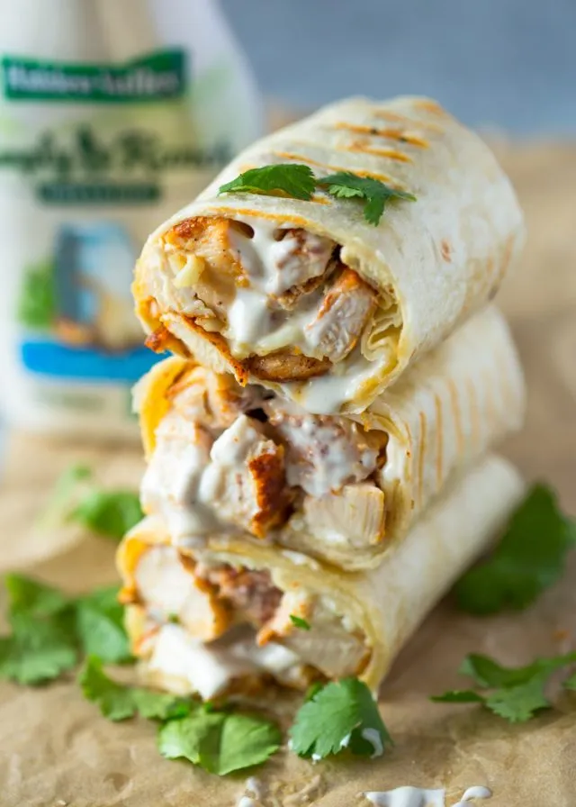

Chicken Ranch Wraps

Description
Chicken Ranch Wraps make for a quick, easy, and delicious lunch! Made to
fill up everyone!
Ingredients
- ½ teaspoon garlic powder
- ½ teaspoon onion powder
- ¼ teaspoon salt
- ¼ teaspoon ground black pepper
- ¼ teaspoon paprika powder
- 2 boneless, skinless chicken breasts
- 1 tablespoon olive oil
- 8 ounces mozzarella cheese shredded
- 1 cup chopped bacon
- ½ cup ranch dressing
- 1 cup chopped iceberg lettuce
- 4 large flour tortillas
-
In a small bowl, combine the garlic powder, onion powder, salt, pepper,
and paprika together. Rub this mixture onto both sides of each chicken
breast. ½ teaspoon garlic powder,½ teaspoon onion powder,¼ teaspoon
salt,¼ teaspoon ground black pepper,¼ teaspoon paprika powder,2
boneless, skinless chicken breasts
-
Heat the oil in a large skillet set over medium heat. Add the chicken
breasts to the pan and cook for 7-8 minutes on both sides, or until a
meat thermometer reads 165°F when inserted into the center of the
chicken. 1 tablespoon olive oil
-
Transfer the chicken breasts to a plate to cool. Once cool, shred the
chicken and add it to a large bowl.
-
Add the mozzarella, bacon, and ranch. Stir to combine. 8 ounces
mozzarella cheese,1 cup chopped bacon,½ cup ranch dressing
-
Gently mix in the lettuce. Set aside. 1 cup chopped iceberg lettuce
-
Place the tortillas on a plate. Microwave the tortillas for 30 seconds,
flipping them halfway through. 4 large flour tortillas
-
Add one quarter of the chicken mixture to the center of a tortilla. Fold
in the outside edges, then roll it up. Repeat until all tortillas have
been filled and rolled into wraps.
-
Push a toothpick through the opposite ends of the wrap, slice in half,
and serve.